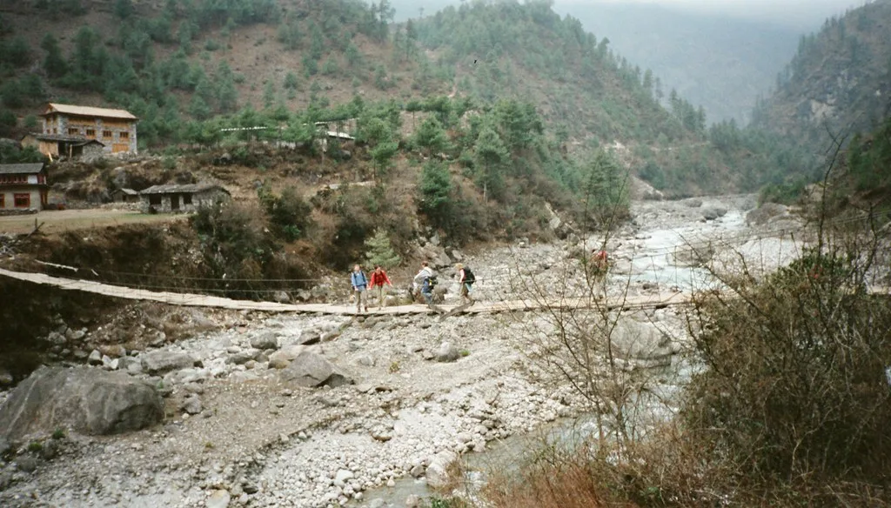
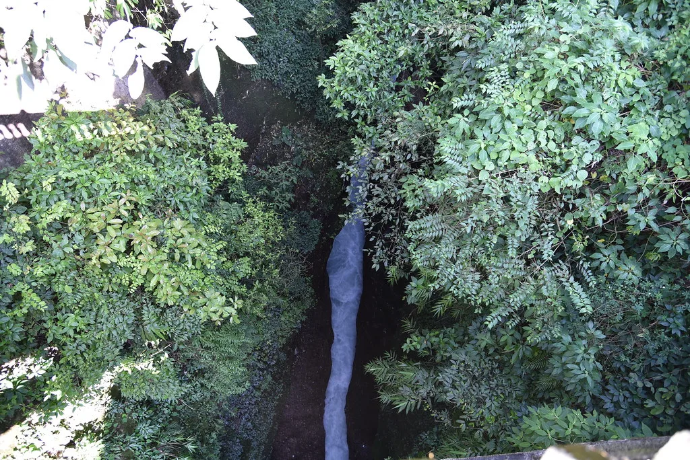

네팔 대홍수 실종 한국인 9명…신속대응팀, 헬기 막히자 육로 수색
네팔 북부 히말라야 접경 지역에서 발생한 대규모 홍수로 실종된 한국인 근로자 9명의 소식이 사고 발생 엿새째인 8월 31일까지 확인되지 않고 있다. 정부는 외교부와 소방청 등으로 꾸린 합동 신속대응팀을 현지에 보내 수색을 지원하고 있으나, 현장 접근이 막혀 어려움을 겪고 있다.
연락이 끊긴 한국인은 수력발전소 건설 현장에 투입됐던 두산에너빌리티 소속 직원 6명과 한국남동발전 소속 직원 3명이다. 이들이 머물던 지역은 지난주 상류의 빙하호가 무너지면서 발생한 급류에 도로와 교량이 대부분 유실됐다. 현장은 평소에도 차량 접근이 쉽지 않은 산악 지대인데, 이번 홍수로 유일한 진입로마저 끊기면서 사실상 고립됐다. 당국은 실종자들이 진흙과 토사에 파묻힌 발전소 지하 터널 안에 현지 근로자 100여 명과 함께 갇혀 있을 가능성을 열어두고 있다.

같은 현장 인근 다른 지역에 고립됐던 두산에너빌리티 소속 한국인 10명은 앞서 전원 안전지대로 대피했다. 9명은 네팔군 헬기로 먼저 이송됐고, 현지 직원들의 대피를 확인하기 위해 남아 있던 현장소장 1명도 마지막으로 헬기를 타고 빠져나왔다. 정부는 이들의 건강 상태에 큰 이상이 없는 것으로 파악했다. 이들은 실종자들과 떨어진 숙소에 머물러 급류를 피할 수 있었던 것으로 전해졌다.
신속대응팀은 당초 헬기를 띄워 실종 지점 상공을 수색하려 했으나, 네팔군이 안전과 공역 혼잡을 이유로 운항 허가를 내주지 않으면서 계획이 무산됐다. 홍수 피해가 광범위해 네팔군 헬기도 자국민 구조와 물자 수송에 집중 투입된 상황이다. 대응팀은 헬기 대신 육로로 접근하는 쪽으로 방향을 틀었고, 사고 현장에서 약 70㎞ 떨어진 바타르 지역까지 이동해 상황을 살핀 뒤 수도의 대사관으로 복귀했다.

대응팀은 이튿날부터 육로 수색 범위를 더 상류 쪽으로 넓힐 계획이다. 도로가 끊긴 구간은 걸어서 이동하고, 사고 지점 가까이 접근하면 드론을 띄워 접근이 어려운 협곡과 매몰 추정 지역을 살펴본다는 방침이다. 네팔 정부와 군, 현지 발전소 운영사와도 수색 인력·장비 지원 방안을 협의하고 있다. 다만 현장까지 남은 구간에도 무너진 토사와 불어난 물이 곳곳에 남아 있어 접근에 속도를 내기 어려운 상황이다.
이번 재해로 인한 인명 피해는 계속 늘고 있다. 네팔 당국은 사망자가 수백 명, 연락이 두절된 사람이 수천 명 규모에 이르는 것으로 집계했으며, 접근이 어려운 산간 마을의 피해 상황이 뒤늦게 파악되면서 숫자가 계속 바뀌고 있다. 이재민도 대규모로 발생해 구호 물자와 임시 거처가 부족한 상황이다. 몬순 기간 집중호우에 빙하 융해가 겹치며 히말라야 일대에서 빙하호 붕괴에 따른 돌발 홍수 위험이 커졌다는 분석이 나온다.
정부는 실종자 가족에게 현지 상황을 수시로 공유하고 있으며, 가족이 원할 경우 네팔 방문을 지원하는 방안도 검토하고 있다. 외교부는 신속대응팀과 별도로 본부 차원의 대책반을 운영하며 네팔 정부와의 협조 창구를 유지하고 있고, 관련 기업들도 자체 대응 인력을 꾸려 수색에 협력하고 있다. 다만 우기가 이어지는 데다 추가 산사태 위험이 남아 있어, 실종자 수색이 장기화할 수 있다는 우려가 나온다.